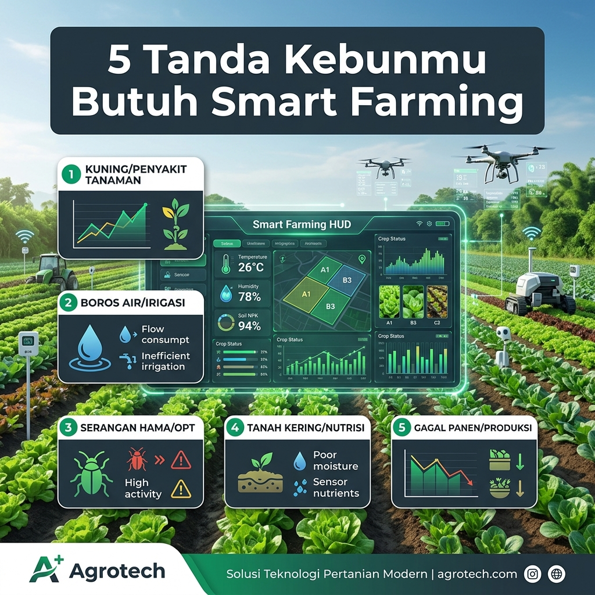
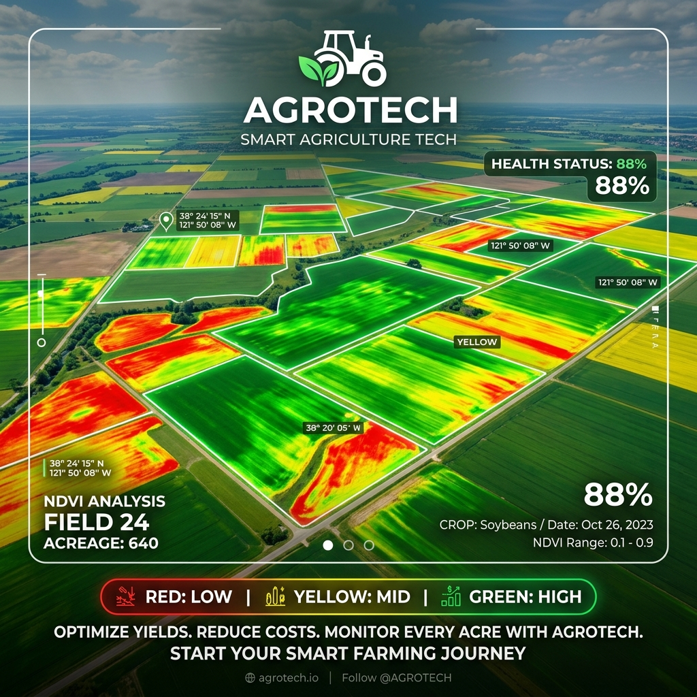
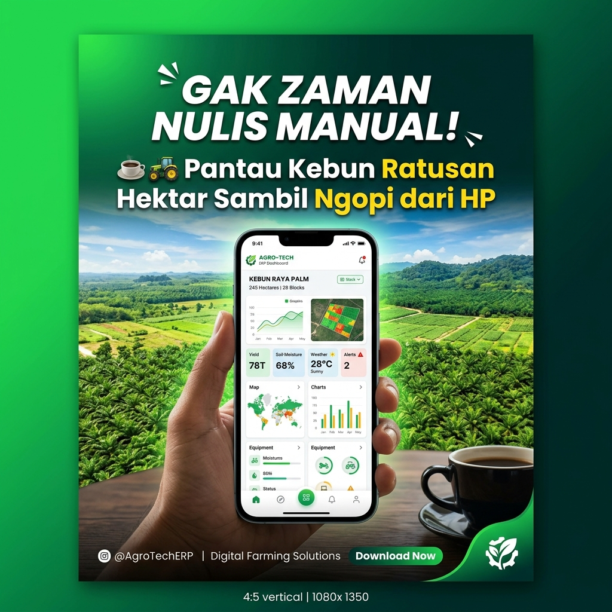
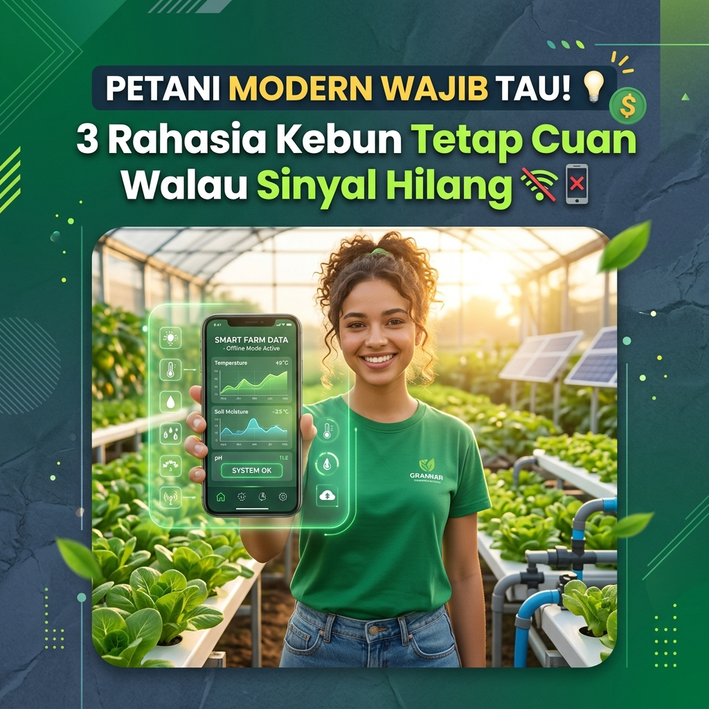
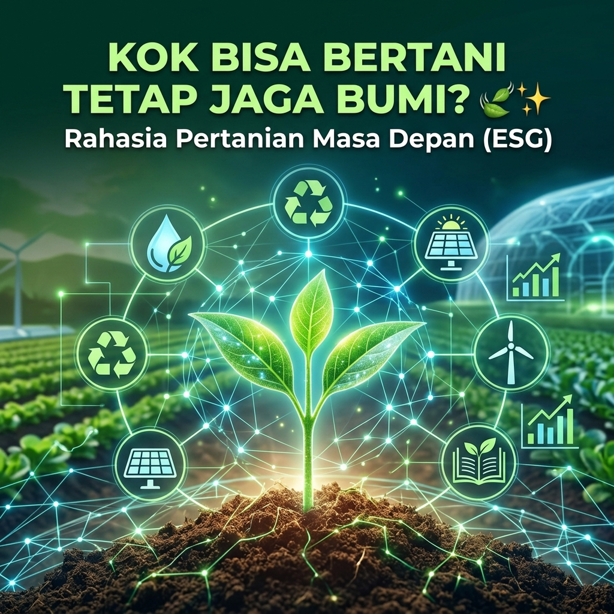

Pusat master identitas profil, 3 opsi logo Instagram feed-ready, video promosi Reels (9:16), infografis edukasi (Carousel 1:1 / 4:5), showcase teknologi pertanian 4.0, dan script teleprompter.
Foto Profil (Avatar): 1080 x 1080 px (1:1 Circle Crop)
Reels / TikTok / Video: 1080 x 1920 px (9:16)
Carousel Edukasi: 1080 x 1350 px (4:5) / 1080 x 1080 px (1:1)
Feed Post / Showcase: 1080 x 1080 px (1:1)
Identitas Profil Instagram & Koleksi Logo Resmi
Pilih variasi logo terbaik untuk foto profil Instagram @agrotech.id (Format 1:1 Square, Optimized for Circle Crop)
128
10.4k
152
Agrotech | Solusi Pertanian 4.0
Teknologi & Agribisnis • SaaS & IoT
🌱 Solusi Teknologi Pertanian Berbasis Cloud SaaS #1 di Indonesia
🚀 Tingkatkan profit kebun, hemat pupuk 35% & Support Offline
📊 Dipercaya 50+ Perusahaan & 10.000+ Ha Lahan
👇 Request Live Demo & Konsultasi Gratis
agrotech.id Stop bertani pakai tebak-tebakan! 🚜⚡ Saatnya beralih ke Pertanian 4.0 dengan dashboard IoT & Cloud SaaS Agrotech!
🎬 Script Video & Caption LengkapDurasi: 30-40 Detik
Stop bertani pakai cara tebak-tebakan! 🚜⚡
Tahukah kamu? Biaya operasional kebun bisa bengkak hingga 40% hanya gara-gara pupuk berlebih, penyiraman yang salah, atau data kebun yang tercecer di buku catatan manual. 📉
Kenalin **Agrotech** — Platform Cloud SaaS & IoT Pertanian #1 di Indonesia! 🌾🇮🇩
✨ **Fitur Unggulan Agrotech:**
1️⃣ **Smart Soil & Weather Sensor**: Pantau kelembaban, pH, & NPK tanah otomatis dari smartphone.
2️⃣ **Support Offline Mode**: Sinyal hilang di pedalaman kebun? Aplikasi tetap bekerja tanpa gangguan!
3️⃣ **Smart Farming ERP**: Catat hasil panen, jadwal pekerja, dan pengeluaran kebun dalam 1 layar.
4️⃣ **Analisis NDVI Satelit**: Deteksi kesehatan tanaman dari pantauan citra satelit & drone.
Terbukti dipercaya oleh **50+ Perusahaan Agribisnis** & mengelola **10.000+ Hektar Lahan** di seluruh nusantara!
👉 Siap bawa kebun Anda ke era modern?
Kunjungi link di BIO @agrotech.id atau DM kami untuk **Request Live Demo GRATIS**! 🚀
---
#Agrotech #SmartFarming #PertanianModern #Pertanian40 #IoTPertanian #AgriTechIndonesia #PetaniMaju #SaaSPertanian #InovasiTani
Edukasi Carousel (Slide 1-5)1:1 / 4:5 Carousel
agrotech.id
Edukasi Pertanian Presisi
Ikuti

Slide 1/5 (Swipe ➡️)
3.120 menyukai • 480 dibagikan
agrotech.id Apakah kebunmu mengalami salah satu dari 5 tanda ini? Swipe sampai slide terakhir buat tahu solusinya! 👉
📚 Carousel Copy & Slide Outline5 Slide Guide
Masih mengira Smart Farming cuma buat kebun skala raksasa? Eits, tunggu dulu! 🛑
Kalau kebun kamu mengalami 5 tanda ini, artinya kamu butuh sistem Smart Farming sekarang juga:
📌 **Slide 1:** 5 Tanda Kebunmu Butuh Smart Farming
📌 **Slide 2:** 1. Boros Pupuk & Air (Tanpa tahu dosis pasti kebutuhan tanaman di tiap blok lahan)
📌 **Slide 3:** 2. Sinyal Hilang = Data Hilang (Pencatatan manual di kertas sering terselip & telat di-rekap)
📌 **Slide 4:** 3. Hama & Penyakit Telat Terdeteksi (Baru sadar saat daun kuning merata & panen anjlok)
📌 **Slide 5:** 4. Laporan Keuangan Sulit Dihitung Akurat & 5. Hasil Panen Fluktuatif Tanpa Tahu Penyebabnya!
💡 **Solusinya?**
Gunakan **Agrotech IoT & Cloud ERP**:
✅ Sensor otomatis pantau tanah 24/7
✅ Fitur Offline Sync saat kerja di kebun terpencil
✅ Rekap biaya input-output otomatis
Save postingan ini biar gak lupa, dan share ke pengelola kebun atau rekan petani lainnya! 🌾
👉 Mau konsultasi kebutuhan kebunmu? Hubungi link di bio @agrotech.id
---
#Agrotech #TipsPertanian #SmartFarming #EdukasiPertanian #PetaniIndonesia #Agritechnology #PertanianPresisi #ManajemenKebun #Agribisnis
Edukasi Presisi & IoT1:1 Square (1080x1080)
agrotech.id
IoT & Smart Nursery
Ikuti
Tech Tips
2.410 menyukai
agrotech.id Pupuk makin mahal? Ini rahasia pangkas pengeluaran pupuk & air hingga 35% dengan IoT Sensor! 💧🌱
💧 Tips Fertigasi & Sensor PresisiEngagement Post
Pupuk kimia makin mahal, tapi hasil panen kok belum maksimal? 💸📉
Jawabannya: **Presisi.**
Memberi pupuk terlalu banyak justru merusak akar dan mencemari tanah. Memberi terlalu sedikit, tanaman kekurangan nutrisi.
Bagaimana **Sensor Agrotech IoT** membantu Anda?
🧪 **1. Real-Time Soil NPK**: Tahu persis kapan tanah butuh Nitrogen, Fosfor, atau Kalium.
💧 **2. Soil Moisture & EC Meter**: Irigasi tetes (drip fertigation) hanya menyala saat kadar air tanah di bawah ambang batas optimal.
📊 **3. Prediksi Cuaca Mikro**: Cegah pemupukan tepat sebelum hujan lebat agar pupuk tidak terhanyut sia-sia!
Hasilnya?
✅ Penghematan biaya pupuk & air hingga **35%**
✅ Kualitas panen lebih seragam (Grade A)
✅ Menjaga kesuburan tanah jangka panjang (ESG Compliant)
Komen "INFO SENSOR" di bawah untuk mendapatkan panduan implementasi Smart IoT di kebun Anda! 👇
---
#Agrotech #PrecisionAgriculture #FertigasiPresisi #SensorTanah #SmartFarmingIndonesia #HematPupuk #IoTTani #TeknologiPertanian
Fitur Produk & Analytics1:1 Square (1080x1080)
agrotech.id
Monitoring Satelit & Drone
Ikuti

NDVI Heatmap
1.890 menyukai
agrotech.id Pantau kesehatan ribuan hektar tanaman dari luar angkasa! 🛰️ Cek bagaimana NDVI Heatmap Agrotech bekerja:
Keliling lahan ratusan hektar setiap hari buat cek tanaman satu per satu? Sudah bukan zamannya! 🛰️👀
Dengan modul **Satellite & Drone NDVI Analysis dari Agrotech**, Anda bisa memetakan kesehatan vegetasi kebun secara instan:
🟢 **Zona Hijau**: Tanaman sehat dengan klorofil tinggi & pertumbuhan optimal.
🟡 **Zona Kuning**: Butuh perhatian — indikasi awal kekurangan air atau nutrisi.
🔴 **Zona Merah**: Deteksi dini stres tanaman atau serangan hama sebelum menyebar luas!
Keuntungan bagi pemilik kebun & korporasi:
🎯 Tindakan kuratif terfokus hanya pada titik yang bermasalah.
⏱️ Menghemat waktu survei lapangan hingga 70%.
💰 Melindungi potensi kerugian gagal panen sejak dini.
Tertarik melihat hasil scan satelit untuk lahan kebun Anda?
Jadwalkan konsultasi gratis di **agrotech.id** atau klik link di bio kami! 🌿
---
#Agrotech #NDVI #SatelitPertanian #DronePertanian #RemoteSensing #PrecisionFarming #AgribisnisIndonesia #SmartFarming
ERP Agribisnis1:1 Square (1080x1080)
agrotech.id
SaaS Cloud Agrotech
Ikuti

2.190 menyukai
agrotech.id Masih zaman nyatet laporan kebun ratusan hektar di buku atau spreadsheet yang rawan hilang? 🚜☕
💼 ERP Showcase & Operational ROIB2B SaaS
Masih zaman nyatet laporan kebun ratusan hektar di buku atau spreadsheet manual yang rawan hilang? 🚜☕
Sekarang kamu bisa pantau seluruh operasional lahan cuma dari 1 layar HP sambil ngopi santai!
Kenalin **Smart Farming ERP Agrotech**:
🔹 Atur jadwal kerja tim lapangan tanpa ribet
🔹 Cek stok pupuk & pengiriman supplier real-time
🔹 Forecasting pendapatan & hasil panen akurat
🔹 Backup data otomatis (Disaster Recovery Ready)
Terbukti membantu **50+ Perusahaan** dan **10.000+ Hektar Lahan** bertani lebih hemat & efisien! 📈
Punya keluhan manajemen kebun? Coba diskusikan di kolom komentar! 👇
📩 Request Live Demo Gratis via link di bio @agrotech.id
---
#Agrotech #SmartFarmingERP #KelolaKebun #Agribisnis #TeknologiPertanian #CloudSaaS #ERPIndonesia #SolusiKebun
Problem-Solving Feature1:1 Square (1080x1080)
agrotech.id
Solusi Lahan Remote
Ikuti

1.248 menyukai
agrotech.id Jujur, siapa di sini yang suka emosi pas lagi nyatet data kebun di lapangan eh sinyal HP malah hilang? 📶😭✋
💡 Relatable Offline-First PostPain Point Solution
Jujur, siapa di sini yang suka emosi pas lagi nyatet data kebun di lapangan eh sinyal HP malah hilang? 📶😭✋
Stop pusing! Ini rahasia kebun kamu tetap cuan dan kepantau rapi walau di lokasi remote tanpa internet:
🌿 **1. Pakai Sensor SmartFarm IoT**
Ukur kelembaban tanah & kebutuhan pupuk secara otomatis. Gak ada lagi cerita pupuk kebuang sia-sia!
📶 **2. Mode Support Offline Agrotech**
Sinyal hilang? No problem! Data tetap tercatat di HP dan otomatis tersinkron saat dapet sinyal lagi.
📊 **3. Real-Time Analytics**
Perkirakan hasil panen dengan presisi tinggi buat patok harga terbaik ke pembeli.
Yuk, bertransisi ke Pertanian 4.0 bersama Agrotech! 🚀
💬 Save postingan ini biar gak lupa, & share ke temen pengelola kebun lainnya ya!
👉 Request Demo Gratis link di BIO @agrotech.id
---
#Agrotech #SmartFarming #PertanianModern #PetaniMaju #AgriTech #Pertanian40 #IoTPertanian #AgribisnisIndonesia #TipsPertanian
ESG & Keberlanjutan1:1 Square (1080x1080)
agrotech.id
Komitmen Berkelanjutan 🍃
Ikuti

3.410 menyukai
agrotech.id Kok bisa bertani dengan teknologi canggih TAPI tetep ramah lingkungan & bikin petani lokal makin sejahtera? 🌾✨
🌱 ESG Trust & Eco StorytellingBrand Values
Kok bisa bertani dengan teknologi canggih TAPI tetep ramah lingkungan & bikin petani lokal makin sejahtera? 🌾✨
Ini dia 3 Komitmen ESG dari Agrotech:
🍃 **Environmental**: Hemat air & pupuk presisi untuk kurangi jejak karbon tanah.
👥 **Social**: Buka akses pasar adil lewat Marketplace Agri untuk tingkatkan ekonomi petani lokal.
🏛️ **Governance**: Data terenkripsi aman & transparansi bisnis tanpa tersembunyi.
Bersama 1.000+ pengguna aktif di seluruh Indonesia, mari buat pertanian kita makin hijau & berkelanjutan! 💚
Like & Share kalau kamu setuju pertanian Indonesia harus makin maju! 🇮🇩🌱
🌐 agrotech.id
---
#Agrotech #PertanianBerkelanjutan #ESGIndonesia #GreenTechnology #PetaniSejahtera #AgriMarketplace #FutureFarming #InovasiPertanian
Studio Produksi Video Reels / TikTok (9:16)
Mockup visual HP & Script Voiceover 35 Detik siap dibaca dengan Teleprompter Mode
Reels
2.8k
246
890
512
@agrotech.id • Ikuti
Revolusi Pertanian 4.0 Tanpa Takut Sinyal Hilang! 🚀🌾 Rekam data kebun otomatis & hemat pupuk hingga 35%!
Agrotech Original Audio - Suara Pertanian Modern
Script Voiceover & Panduan Adegan Video (35 Detik)
🎙️ [00:00 - 00:05] HOOK ADEGAN 1:
(Visual: Talent memegang smartphone di tengah lahan kebun, ekspresi bingung & frustrated menatap sinyal HP bertuliskan 'No Service')
VO: "Jujur, siapa di sini yang suka emosi pas lagi nyatet data kebun, eh sinyal HP malah hilang total? 😭📶"
⚡ [00:05 - 00:15] SOLUSI ADEGAN 2:
(Visual: Transisi cepat sound swoosh. Tampilan UI Agrotech di layar smartphone dengan indikator 'Offline Sync Active' dan drone pertanian terbang di atas kebun)
VO: "Tenang! Sekarang ada Agrotech! Platform Smart Farming IoT dengan mode Offline Support. Jadi walau di pelosok tanpa internet, semua pencatatan pupuk, air, dan panen tetap tersimpan otomatis!"
📈 [00:15 - 00:25] PROOF & VALUE ADEGAN 3:
(Visual: B-roll sensor tanah bercahaya neon mengalirkan data, grafik profit naik, dan hamparan kebun hijau subur)
VO: "Sensor presisi kami bantu hemat pupuk & air hingga 35%. Sudah terbukti membantu lebih dari 50 perusahaan dan 10.000 hektar lahan di Indonesia!"
👉 [00:25 - 00:35] CALL TO ACTION ADEGAN 4:
(Visual: Talent tersenyum percaya diri mengacungkan jempol ke arah kamera, layar menampilkan URL agrotech.id dan tombol Request Demo)
VO: "Saatnya bawa agribisnis kamu ke era modern! Cek link di bio @agrotech.id sekarang untuk Request Demo Gratis!"